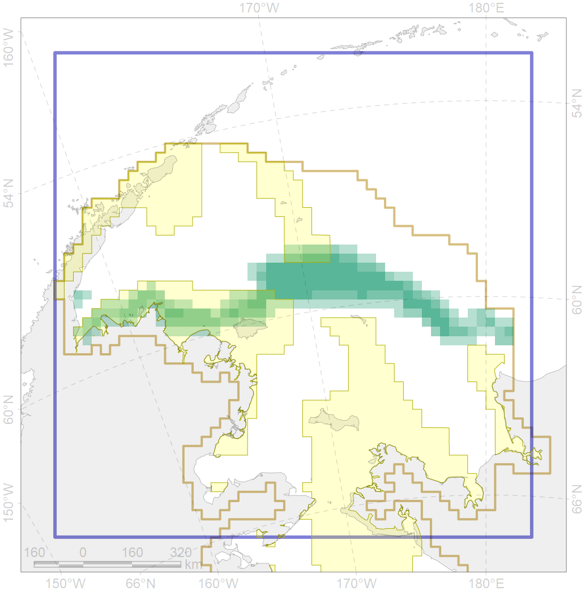
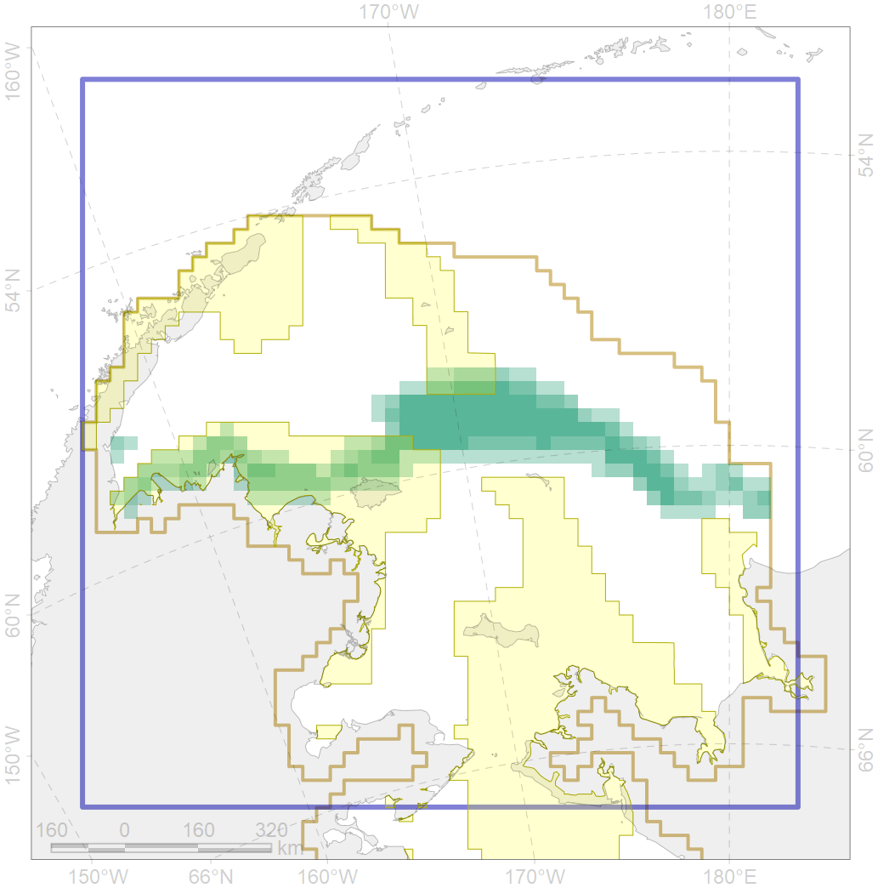

2063
 

| CF code | 2063 |
| CF name | Spotted seal whelping areas as predicted by MIZ distribution |
| Time Period | 1979-2017 |
| Source(s) | Trukhanova; Platonov (MIZ data); Chernook et al 2018 |
| Seasonality | March-June |
| Depth Horizon | 0-200m |
| Methodology | Extert input; surrogate data; data compilation |
| Use Restrictions | Surrogate data provided by Nikita Platonov and available for PANPAN project participants |
| Author Name | Irina Trukhanova |
| Notes | |
| Scenario’s Target | 0.18 |
| Target Achievement | 0.323 (Scenario: 179.3%) |
| PAC | Share of the Total Amount within the PAC | Share of the Target Achievement for the ArcNet | PAC’s Contribution to the Target Achievement |
|---|---|---|---|
| 2 | 4.8%6.1% | 12.8%14.1% | 7.2%7.9% |
| 3 | 26.1%27.0% | 139.8%144.7% | 77.9%80.7% |
| inner | 30.9%33.1% | 152.6%158.8% | 85.1%88.6% |
| outer | 69.1%77.1% | 26.7%57.9% | 14.9%32.3% |
| † supplement values are for area consistence whereas principal values are for Accenter compatible gridded stats |